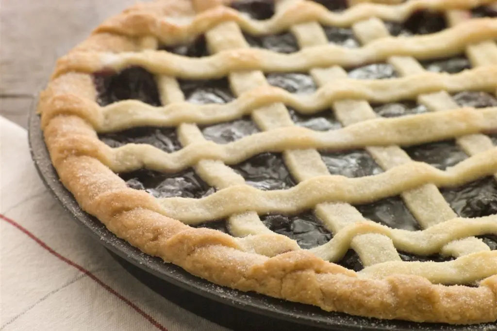

Como hacer tu propia Pasta Frola, rapido y facil:
Para toda ocasión y momento, nunca debe de faltar este pilar de la pasteleria argentina.
tanto como en invierno o verano no deja insatisfecho a cualquiera que se atreva a degustar su sabor
de ingredientes simples.